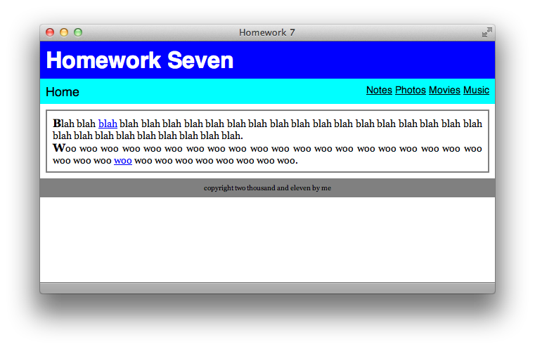

Divs and Spans
At this point, we’ve learned most of basic HTML and a lot of CSS. To beat my metaphor to death, HTML is the black and white outline and CSS is the color table in a color-by-numbers drawing. The two languages can exist without the other: you can have your plain HTML document to display the webpage and your stand-alone stylesheet that does, well, nothing. For the beginning of this lesson, we’ll learn a little bit of HTML that exists purely because of CSS. Without CSS there is really no reason to use these two HTML tags: <div> and <span>.
These two tags allow you to create more structure than the basic header, paragraph, and list tags allow. <div> tags are used to wrap around large amounts of content, like a menu bar or a footer. <span> tags are used to wrap around small amounts of content, like a word or a sentence. For example, if you want your webpage to be contained in a box that’s centered on the screen, you can wrap all of your content in a <div> that you style later to be centered. If you want to highlight one word in your paragraph, you can wrap the word in a <span> that’s styled to be highlighted. Let’s start with a basic example:
<html> <head> <title>divs and spans</title> </head> <body> <div>This box is 200 pixels wide.</div> <p>The final word of this sentence has <span>emphasis!</span></p> </body> </html>
You may ask, why not just wrap the first sentence in a paragraph tag and then define the tag to be 200 pixels wide in CSS? The answer is, since <div> doesn’t intrinsically mean anything, you could actually place paragraph tags within it. Use <div>s to lay out the basic foundation of your page. To complete the example, here is our CSS:
div {
width: 200px;
}
span {
background-color: yellow;
}
Now you may be thinking, if I’m going to use <div> tags to lay out my entire page, chances are I will have more than one section. This is a problem, because all <div>s will look the same because their CSS will apply to each one. I want some <div>s to look one way, and other <div>s to look different! Well, CSS has a solution. Read on.
IDs and Classes
What if you could label HTML tags and then reference them separately in your CSS? For example, a normal webpage usually has a “header” <div> for the page title, a “nav” <div> for the navigation menu, an “article” <div> for the main content, and a “footer” <div> for the bottom. Each of these sections should have a different appearance, though, because the header may have a colorful background and the footer may have tiny text. Using labels for each <div> tag allows you to style each <div> separately in the CSS, simply and cleanly.
There are two types of these labels, ID and class. The difference between them is subtle: an ID is a label that is only used once on the whole HTML page, and a class may be used as many times as you need. In the HTML, you insert the label inside the beginning target tag. For example, if you wanted to give a paragraph the ID “aboutme”, your beginning paragraph tag would look like <p id="aboutme">. The closing tag remains the same: </p>. If your “aboutme” label was a class (and therefore was going to be used again later), the HTML would only change to <p class="aboutme">.
Below, you’ll find the HTML for a sample webpage, using <div> tags with unique ID labels to lay out the foundation. Drawing from your previous experience, you can imagine inserting a <h1> in the header, a <ul> list in the navigation menu, some <p> paragraphs in the article, and a <p> as well in the footer. Notice that I’ve also included the reference to the stylesheet in the <head> already.
<html> <head> <title>My Web Page</title> <link rel="stylesheet" ref="ids.css" type="text/css" /> </head> <body> <div id="header"> </div> <div id="nav"> </div> <div id="article"> </div> <div id="footer"> </div> </body> </html>
Now let’s explore the CSS side of IDs and classes. In the CSS file (named “ids.css”) accompanying the above HTML, you would probably have style rules for the body, paragraphs, links, etc. In addition, you now get to create style rules for the labels as well. To style an ID, you use a number symbol (#) followed by its name; to style a class, you use a period (.) followed by its name. Observe:
#header {
background-color: blue;
}
#nav {
height: 20px;
background-color: gray;
}
#article {
background-color: white;
border: 1px solid red;
}
#footer {
font-size: 8px;
}
.highlight {
background-color: yellow;
}
(I threw in the highlight class as an example.) Notice that in the CSS, you’ve just defined that label itself: not the label’s behavior as it applies to a <div> or any other specific tag. That means that if you labeled a <a> tag with the footer ID, the resulting link’sfont size would be 8 pixels even if it wasn’t within the footer <div>. Of course, you wouldn’t use the footer label more than once in this example, because we made it an ID, and those can only be used once per page, remember?
Let’s recap: you can label tags with IDs and classes to allow the same tag to have different styles. This is especially handy when using <div> and <span> tags to lay out your content. In the HTML, be sure to include the label within its corresponding beginning tag, such as <h1 class="large">. In the CSS, preface IDs with number signs and classes with periods.
How to Cascade
As we started to explore in the previous lesson, the C in CSS stands for Cascading. Here is the rest of how it comes into play. The word Cascading is used in reference to how styles override each other—in a cascade of tags, if you will—and it’s all based on the order they are listed in your HTML. The first place you probably reference any CSS in your HTML document is in the <head> tag, when you link to your external stylesheet.
You can also type CSS directly within your HTML document, in the <head> tag. This is called internal CSS, and if you only have a couple style rules and don’t feel like you need a completely separate stylesheet, it’s a reasonable way to go. Since it is an HTML document, you have to wrap all the CSS within a special tag: the <style> tag. Internal CSS within the style tag also requires the type attribute so that the browser knows how to read it. Here is an example:
<html> <head> <title>example</title> <style type="text/css"> p { background-color: pink; } </style> </head> <body> <p>blah blah blah</p> </body> </html>
Hold on — there’s still one more way to inject CSS directly into your HTML document, and it’s called inline CSS. This is very similar to using a <span>, because it applies CSS to one specific HTML tag, and <span>s are usually wrapped around a small piece of the page, like one tag’s worth of content. Inline CSS is where the style that we used before becomes an attribute. You then paste the CSS you desire directly into the tag, so line breaks are usually omitted to avoid confusion and clutter. For example, say you wanted to make a second-level header tag blue. The HTML with inline CSS would look like this:
<h2 style="color: blue;">This header is blue</h2>
Why am I telling you about this now? These three levels allow you to cascade your CSS to override previous styles in special cases. Let’s say that in your stylesheet, you define all <h1> tags to be red. However, you want one special <h1> tag to be green. You can use inline CSS to override your stylesheet, and this works because the inline CSS is located after the link to the stylesheet. Your browser loads the stylesheet, thinks “All <h1> tags are red,” and chugs along until it sees the inline style, and then thinks “Aha! This one is green!” Seriously. The HTML would look like this:
<html> <head> <title>example</title> <link rel="stylesheet" href="red.css" type="text/css" /> </head> <body> <h1>Red News</h1> <h1 style="color: green;">Surprise Green News</h1> </body> </html>
and as you can guess, the external stylesheet “red.css” would simply be:
h1 {
color: red;
}
Key Concepts
<div>and<span>tags are meaningless HTML tags that you can use to structure your page beyond the basic tags. Combined with CSS, these tags allow you to design your page with a lot of control.- Use ID and class labels to apply different styles to repeated instances of the same tag, especially for
<div>and<span>.- An ID label can only be used once per HTML document and is prefaced by a # sign in CSS.
- A class label can be used multiple times in an HTML document and is prefaced by a period in CSS.
- CSS code will override any previously-written CSS style rules on the same page.
- External CSS are the stylesheet files that we’ve been linking to in the
<head>section. - Internal CSS is like a small stylesheet completely written within the
<head>section. - Inline CSS is applied directly to one specific tag, and it will override both internal and external CSS.
- External CSS are the stylesheet files that we’ve been linking to in the
Homework
The assignment for this lesson is more about becoming familiar with the topics introduced than creating your own. An HTML document and stylesheet are included with the materials download. There is one mistake in the stylesheet; find it and figure out how to fix it. (Hint: the mistake is only one character.) Also, after studying the included files, add a little bit of inline CSS that makes the page looks like the screenshot below. You can look up the answers in the included Answers text file.
Appendix: In-page Linking
Have you ever wanted to link to a specific section of an HTML page? For example, if an entire calendar is printed within one HTML file, how do you direct a reader to a specific month? Now that we know about IDs, we can do this. Since an ID can only be used once per page, the browser should have no problem figuring out where on the page a certain ID is. All you do then is make sure important HTML elements have a unique ID, and then add the appropriate ID (with its leading number symbol) to the URL: calendar.html#october.
I’ve been adding an ID to each section of every lesson, even though I don’t use CSS to style each section differently. Try it with this lesson: add #idsandclasses to the end of the URL in your browser window (so the end of the URL looks like lesson7.html#idsandclasses) and press return. You should jump to that section, like magic.
You can create <a> tags that take advantage of this too, of course. Here’s a link to that same IDs and Classes section. To link to a different section within the same HTML file, just set the href parameter to the ID:
<a href="#lunch">Lunch</a>
If you want to link to a specific section of another page, include as much of the page’s URL as you need (remember, if it’s in the same directory, you just need the filename) and then add the ID:
<a href="meals.html#lunch">Lunch</a>
Again, this will not work with classes since there may be more than one on a given page, and the browser wouldn’t know which one to go to. However, it doesn’t matter what kind of tag has the linked-to ID. You can use it on divs, spans, headers, paragraphs, links, and more!